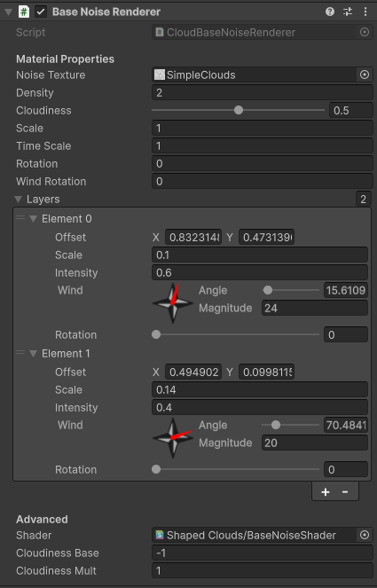
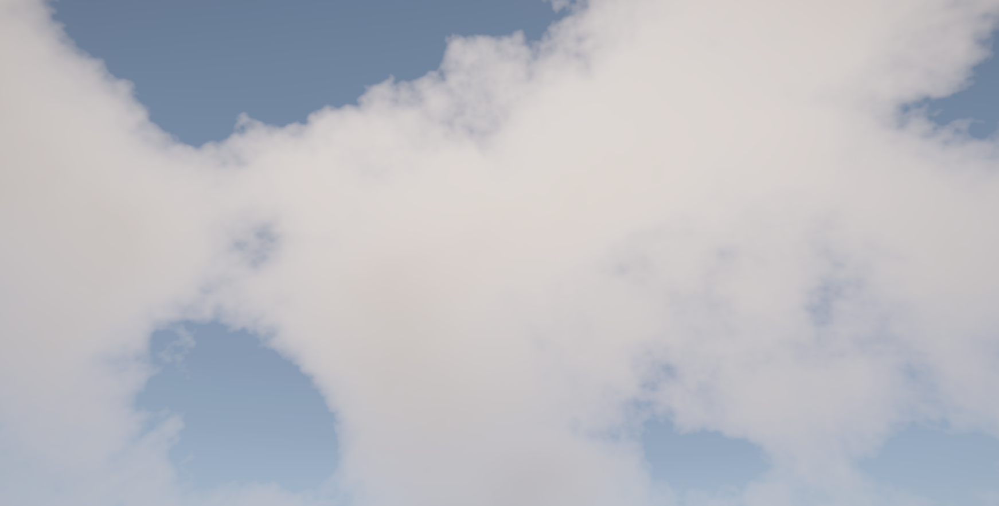
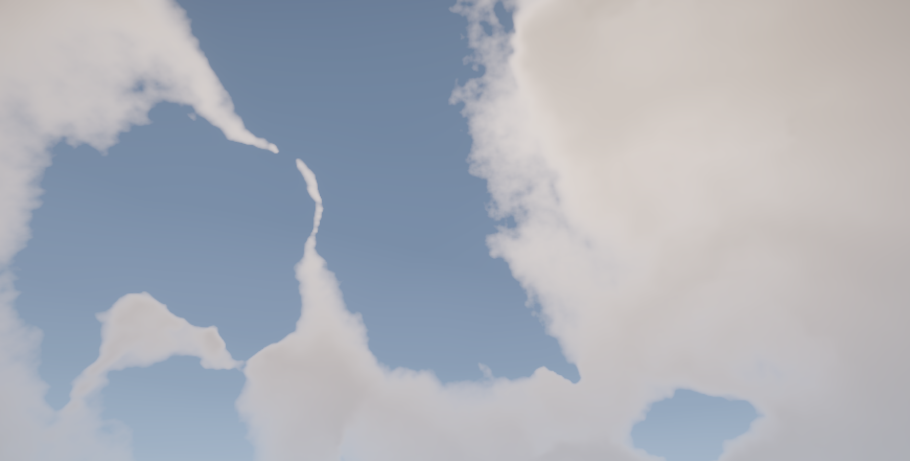
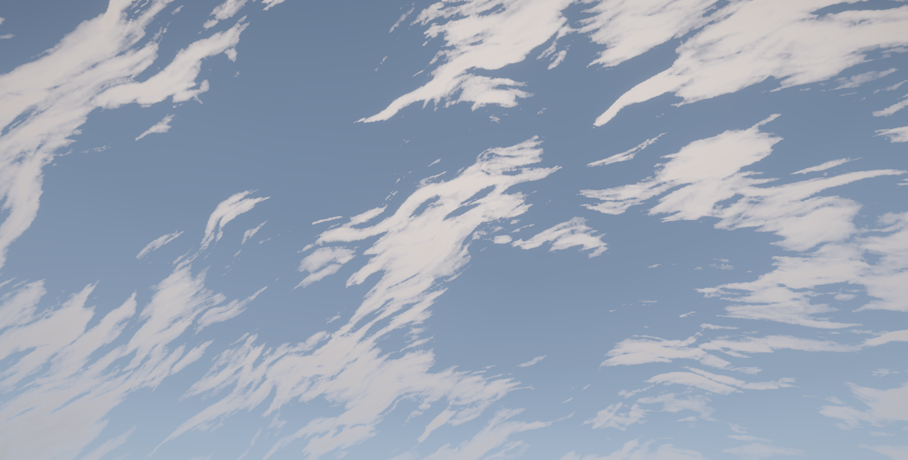
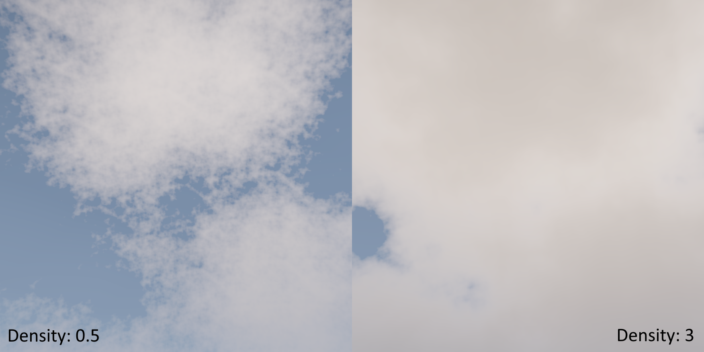

Base Noise Renderer
Generates random noise to act as the overall shape of clouds. The noise texture itself can be modified, as well as the amount of layers and their values (limit is 8).
Can be added to a GameObject by clicking "Add Component" and selecting "Shaped Clouds/Cloud Renderers/Base Noise Renderer", or created as a new GameObject by right-clicking in the hierarchy and selecting "Shaped Clouds/Base Noise Renderer". Reminder that the GameObject this component is attached to has to be a direct child of a Clouds Controller, or it won't render.
Inspector Settings

Now, let's go over each of those fields and what they do.
Noise Texture
Controls the texture used by the effect, should be a tileable noise texture with preferably a size of 512x512 at most. The most important import setting for any texture being used as noise is sRGB (Color Texture), which should be unticked (false) since this is a linear texture.
Here's a few different textures (all included with the asset, in the Textures folder) and how they look without changing anything else about the component:


Notice that the second and third images have visible pixels. That's a result of the noise textures being too large (low scale layers) and resolution being too low, and can be fixed by adjusting them like this:

This image uses full resolution for both Base and Final Texture, a scale of 0.5 for the first layer and 0.75 for the second. Ideally, the resolution would be lower and a blur would be applied, any details left for the Cloud Filter to do, but this is just an example.
You can also use textures that were never meant to be noise, if your goal is making interesting looking clouds. As long as the texture is tileable and a little bit abstract, it can be used to generate very unique clouds.
Density
Controls how full the cloud is. Distinct from the same field in the Cloud Filter because the Base Texture doesn't have a concept of opacity, just thickness/density of clouds. With a lower density, the cloud becomes weaker, but the visible parts aren't going to fade away in the same way. Instead, they'll be hidden by detail.
Here's a comparison of the same clouds with vastly different density settings:

If density is negative, the noise will subtract clouds instead of adding them, opening holes in the sky. Can be used to make more unpredictable shapes, without having to use considerably different textures.
Cloudiness
Controls how much of the sky is covered by clouds. Keep in mind that 0 cloudiness doesn't necessarily correspond to no clouds in the sky, and 1 isn't necessarily the sky being fully covered.
To adjust those values, the fields cloudinessBase and cloudinessMult can help adjust the slider so it's perfect.
It works this way because cloudiness should be an easy way to control how many clouds in the sky, but different noise textures and layer settings will make it stop working.
Scale
The scale of the noise textures. Each layer of noise has its own scale field, which is multiplied by this one. In other words, this scale field controls the size of the noise texture used in all layers at the same time.
Time Scale
How fast wind moves the different layers of noise. Similar to Scale, multiplies the wind value of all layers and is used to modify them together.
Rotation
Rotates the texture used by the layers, again, all at once. Useful for more directional noise, so that the correct side of the texture is moving in the desired direction.
Wind Rotation
Rotates the wind direction of the layers of noise, together. If you plan on making a dynamic weather system with wind direction that varies, you might want to use this to avoid having to control each layer individually.
Layers
The layers of noise this base texture will use. No more than 8 layers are allowed, which is more than enough.
If you need more than 8 layers of base noise, create a second base noise object and add more layers there.
Shader
If you write a custom shader, or make small changes to a copy of the default, set it in this field. The renderer will automatically create a new material based on the new shader and destroy the previous one.